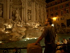
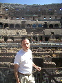
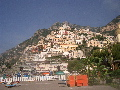
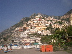
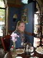
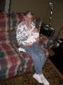
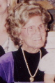
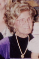
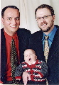
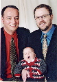

2004: Bem vindo Daniel Xavier, vá em paz Bebe Brown
Com mais um ano acabando, é hora de atualizar familiares e amigos sobre os eventos mais importantes em nosso ano. Se você clicar com o botão esquerdo do mouse em cada foto, você poderá ver uma versão maior. This letter is also available in English.
O Natal de 2003 nos encontrou na mesma casa na Praia do Bom Jesus na Ilha da Magia.
 O Scott perdeu o vôo comigo para o
Brasil porque o visto dele não chegou em tempo para a
partida. Portanto eu fui mais cedo e visitei amigos e familiares em
Porto Alegre. Scott nos encontrou mais tarde em Florianópolis e teve
que retornar na noite de 31 de dezembro. Esta foi a primeira vez que
nós passamos o Natal numa casa de praia. Como os meus sobrinhos,
Tiago e Maiara, são agora adolescentes, nós tivemos um feriado muito
calmo e relaxado. Meu amigo paraguaio Horácio, que agora mora em
São Paulo, foi a Florianópolis para passar alguns dias
conosco. Numa coincidència incrível do tipo "mundo pequeno", numa
tarde eu me deparei com nosso amigo Ilmar e o namorado dele, Simon,
num bar da Praia Mole. Ilmar mora na Dinamarca e eu não tinha visto
ele desde 1997 quando ambos morávamos no Brasil.
O Scott perdeu o vôo comigo para o
Brasil porque o visto dele não chegou em tempo para a
partida. Portanto eu fui mais cedo e visitei amigos e familiares em
Porto Alegre. Scott nos encontrou mais tarde em Florianópolis e teve
que retornar na noite de 31 de dezembro. Esta foi a primeira vez que
nós passamos o Natal numa casa de praia. Como os meus sobrinhos,
Tiago e Maiara, são agora adolescentes, nós tivemos um feriado muito
calmo e relaxado. Meu amigo paraguaio Horácio, que agora mora em
São Paulo, foi a Florianópolis para passar alguns dias
conosco. Numa coincidència incrível do tipo "mundo pequeno", numa
tarde eu me deparei com nosso amigo Ilmar e o namorado dele, Simon,
num bar da Praia Mole. Ilmar mora na Dinamarca e eu não tinha visto
ele desde 1997 quando ambos morávamos no Brasil.
Em janeiro nós fomos de novo para o tradicional fim-de-semana de esqui do meu departamento em Jasper. Este ano nós nos hospedamos em estilo no luxuoso e internacionalmente famoso Jasper Park Lodge. Por causa da nossa experiência dirigindo em estradas congeladas em 2003, este ano nós fomos de ônibus. Em janeiro nosso carro, um Dodge Stratus 1996, morreu. Então nós compramos um nova veraneiro Saab 9.5
Conferências me levaram a muitos lugares na primeira metade do ano. Eu fui a Monterey na California em Fevereiro, e aproveitei para ir a São Francisco e visitar o Kurt e o Marty. Eu voltei a Palo Alto em março e visitei Guillaume, Kagan e Irem em São Francisco. Em Abril eu passei uma semana em Barcelona na Espanha precedida de uma rápida visita a Vancouver. Em meados de abril eu fui a West Laffayete em Indiana e no final de abril a Santa Fé, Novo México.
No final de maio Scott fez uma viagem relâmpago aos países escandinavos por convite do governo Canadense para discutir pesquisas em fuel cells. Eles visitaram Oslo, Copenhagen, Helsinki, Stockholm, e Trondheim em 8 dias! Scott teve oportunidade de passar um final de semana com o Ilmar e o Simon em Copenhagen. Quando ele retornou eu parti para Washington, DC com uma rápida visita em Newark, Delaware, para rever amigos.
Você deve lembrar que no final do ano passado nós estávamos falando com uma futura mamãe de 26 anos que estava considerando colocar o bebê dela conosco para adoção. O bebê da Kathryn estava para nascer em julho. Em março ela nos disse que havia decidido criar o bebê. Nós ficamos disapontados por alguns dias, mas não podíamos lamentar muito por uma mãe resolver criar o próprio filho, e foi bom que ela decidiu cedo antes de estarmos com expectativas muito elevadas.
Com a perspectiva de sermos pais um pouco mais distante, eu continuei fazendo planos para o meu sabbatical. O plano era para mim começar em julho e passar alguns meses nos Estados Unidos e alguns meses em Porto Alegre.

 Em junho nós tiramos umas férias de três
semanas na Itália. Exceto por visitas a nossas famílias, esta foi a
primeira viagem que eu e o Scott fizemos juntos em muitos anos. Nós
escolhemos Roma porque não queriamos viajar muito e Roma tinha muito
a oferecer em um lugar. Nós nos divertimos muito. Não fizemos
reserva de hotel com muita antecipaçao. Além de visitar os lugares
tradicionais de Roma, nós fizemos uma tour de comida de Roma onde
nós aprendemos mutio sobre bons lugares para comer e sobre fatos
históricos sobre a comida de Roma. Depois nós viajamos para o Sul
até Nápolis, Pompéia e Positano. O caos de Nápoles era tanto que
nós visitamos o Museu de Arqueologia, que contém muitos dos
artefatos de Pompéia, em uma tarde e saimos da cidade na manhã
seguinte!
 Nós passamos um dia em
Pompéia e então fomos para Positano. Positano é
um bela cidade encrostada em altos precipícios na beira do
mar. A cidade praticamente não tem ruas, só
escadas. Foi um lugar muito bom para relaxar por alguns dias.
 De volta a Roma,
enquanto estávamos comendo gelato em nossa gelataria favorita, eu
disse ao Scott que ainda bem que não precisávamos voltar para casa
e correr para nos prepararmos para a chegada de um bebê....
Nós passamos um dia em
Pompéia e então fomos para Positano. Positano é
um bela cidade encrostada em altos precipícios na beira do
mar. A cidade praticamente não tem ruas, só
escadas. Foi um lugar muito bom para relaxar por alguns dias.
 De volta a Roma,
enquanto estávamos comendo gelato em nossa gelataria favorita, eu
disse ao Scott que ainda bem que não precisávamos voltar para casa
e correr para nos prepararmos para a chegada de um bebê....
Nós havíamos plantado nossa horta de verão, e também cuidamos de nossas flores perenes no nosso jardim. Scott decidiu tentar semear o milho no porão da casa em abril para esticar o período de crescimento --- semeadura fora de casa aqui só pode ser feita na última semana de maio. Ele conseguiu colher as espigas de milho mais curtas do mundo. Toda a colheita, mais ou menos 25 espigas, serviu para uma refeição para nós dois. Ele teve muito sucesso com batatas, cenouras, ervilhas, e saladas verdes. Eu tive sucesso com tomates que eu plantei no lado Sul da casa - graças ao Silvio Cazella que cuidou deles enquanto eu estava viajando. Por todo o ano nós tivemos muitos jantares com amigos em casa e na casa de nossos amigos Don e Alayne com o filho de dois anos, Jude. Eles tiveram um segundo filho, George, no final de junho. Nós também convivemos bastante com Phil, Ken, e o filho adotivo deles, Ethan, que agora está com três anos. Eu também me manti ativo com o Making Waves Swim Club.
 Quando nós aterrizamos no aeroporto de Toronto retornando de Roma, eu olhei o meu email e descobri que a agência de adoção estava tentando nos localizar. Nós tinhamos sido selecionados por uma futura mamãe para adoção! Nós encontramos Belinda na mesma semana e ficamos sabendo que ela poderia ter o bebê a qualquer momento nas próximas 6 semanas. Portanto nós passamos o primeiro final de semana de volta em casa correndo para adquirir todas as coisas básicas para esperar o bebê. Nós passamos a maior parte do mês de julho terminando os preparativos para a chegada do bebê.
Enquanto nós esperávamos a chegada do bebê, eu fui para Toronto para uma visita ao laboratório da IBM por uma semana no meio de julho. Scott foi fazer uma viagem a cavalo pelas montanhas rochosas canadenses com o James, que é o filho adolescente de nossa vizinha. Scott fez lições de equitação por um ano em preparação para esta viagem. O Scott caiu do cavalo enquanto estava cavalgando montanha acima e puxando outro cavalo. Ele teve dores muito sérias nas costas por várias semanas depois da queda.
No dia 29 de julho nós viajamos rapidamente para Calgary (mais ou menos três horas de carro de Edmonton) porque a Belinda estava no hospital. Foi um alarme falso. Enquanto estávamos em Calgary nós ficamos sabendo que o bebê da Kathryn, James Douglas, havia nascido.
 No dia 11 de agosto o parto da Belinda foi induzido e o bebê
Daniel nasceu! Nós estávamos com a Belinda na sala de parto e
nos apegamos a ele imediatamente. Daniel teve que ficar na UTI de
bebês por alguns dias. Enquanto nós estávamos no hospital tivemos a
oportunidade de conhecer Mikaela, a irmã do Daniel que tem 7 anos de
idade. Nós trouxemos o Daniel para casa em Edmonton no dia 15 de
agosto com uma parada estratégica muito importante na casa do Ronald
e da Emily em Lacombe que fica a meio-caminho entre Edmonton e
Calgary.
No dia 11 de agosto o parto da Belinda foi induzido e o bebê
Daniel nasceu! Nós estávamos com a Belinda na sala de parto e
nos apegamos a ele imediatamente. Daniel teve que ficar na UTI de
bebês por alguns dias. Enquanto nós estávamos no hospital tivemos a
oportunidade de conhecer Mikaela, a irmã do Daniel que tem 7 anos de
idade. Nós trouxemos o Daniel para casa em Edmonton no dia 15 de
agosto com uma parada estratégica muito importante na casa do Ronald
e da Emily em Lacombe que fica a meio-caminho entre Edmonton e
Calgary.

 Daniel é um bebê muito
fácil de cuidar. Ele teve dificuldades no primeiro mês
com uma assadura muito séria no bumbum. Mas assim que
nós descobrimos que ele é alérgico ao leite de
vaca e mudamos para leite de soja, o problema disapareceu. No final
de setembro os pais do Scott vieram visitar o Daniel por alguns
dias. Eles se apegaram ao Daniel imediatamente e o Daniel teve muito
mais aconchego a sua disposição.
Daniel é um bebê muito
fácil de cuidar. Ele teve dificuldades no primeiro mês
com uma assadura muito séria no bumbum. Mas assim que
nós descobrimos que ele é alérgico ao leite de
vaca e mudamos para leite de soja, o problema disapareceu. No final
de setembro os pais do Scott vieram visitar o Daniel por alguns
dias. Eles se apegaram ao Daniel imediatamente e o Daniel teve muito
mais aconchego a sua disposição.
Nossos amigos e familiares cobriram o Daniel de presentes, cartões de boas vindas e emails --- daí a razão para as roupas bonitinhas nas fotos. Muito obrigado a todos vocês que ligaram, visitaram, mandaram cartões, compraram presentes, etc. Desculpe não termos mandado mensagens de agradecimento, nossas mãos estavam ocupadas!
 No início de outubro nós fomos a
Calgary para que o Scott pudesse participar de uma conferência e
também visitamos a Belinda e a Mikaela. Eu fiz uma viagem de dois
dias para uma conferência em Toronto. Em novembro a Belinda e a
Mikaela vieram para Edmonton para uma segunda visita com Daniel e
conosco. No início de Dezembro Daniel comecou a frequentar a creche
da universidade e, sendo o "estudante" mais novo logo se tornou o
queridinho das "professoras" e das crianças mais velhas.
No início de outubro nós fomos a
Calgary para que o Scott pudesse participar de uma conferência e
também visitamos a Belinda e a Mikaela. Eu fiz uma viagem de dois
dias para uma conferência em Toronto. Em novembro a Belinda e a
Mikaela vieram para Edmonton para uma segunda visita com Daniel e
conosco. No início de Dezembro Daniel comecou a frequentar a creche
da universidade e, sendo o "estudante" mais novo logo se tornou o
queridinho das "professoras" e das crianças mais velhas.
No dia 3 de dezembro, o Ofício da Corte da Rainha em Alberta expediu a ordem final de adoção para o Daniel e nos ortougou a custódia exclusiva do Daniel. Em conseqüência o nome do Daniel mudou para Daniel Xavier Amaral Meadows e a certidão de nascimento dele está sendo alterada para constar que ele é filho de Edward Scott Meadows Jr. e José Nelson Amaral.
  Na noite de 6 de dezembro, a vó do Scott,
Bebe Brown, morreu. Sendo o mais velho dos netos, o Scott sempre foi
o bebê da Bebe. Eles tinham uma relação muito
próxima e Bebe sempre foi a âncora do Scott. Tinha sido
difícil ver a saúde da Bebe deteriorar lentamente nos
últimos anos. Nós ficamos especialmente tristes pela
Bebe não ter conhecido o Daniel antes dela partir. Nós
podemos imaginar a Bebe usando um de seus típicos superlativos
de Oklahoma: "Este não é o bebê mais lindo
que voce já viu?" e dois pais orgulhosos sorririam em
concordància.
 Na noite de 6 de dezembro, a vó do Scott,
Bebe Brown, morreu. Sendo o mais velho dos netos, o Scott sempre foi
o bebê da Bebe. Eles tinham uma relação muito
próxima e Bebe sempre foi a âncora do Scott. Tinha sido
difícil ver a saúde da Bebe deteriorar lentamente nos
últimos anos. Nós ficamos especialmente tristes pela
Bebe não ter conhecido o Daniel antes dela partir. Nós
podemos imaginar a Bebe usando um de seus típicos superlativos
de Oklahoma: "Este não é o bebê mais lindo
que voce já viu?" e dois pais orgulhosos sorririam em
concordància.
No dia 8 de dezembro, imagens do Daniel abriram o noticiário local da TV em Edmonton. Nós tinhámos sido contatados naquela tarde para comentar sobre a opinião da Suprema Corte do Canada publicada no dia 9 de dezembro determinando que o parlamento canadense tem jurisdição exclusiva para legislar sobre o casamento entre pessoas do mesmo sexo. A repórter ficou muito interessada no fato de que nós tinhámos um bebê e usou cenas de nós brincando com o Daniel na abertura da reportagem. Nós esperamos que o parlamento Canadense aprove a legalização de casamento entre pessoas do mesmo sexo para todo o país em 2005. Canada será o terceiro país, depois da Bélgica e da Holanda, a aprovar casamento entre pessoas do mesmo sexo.
  Na antecipação de levar
o Daniel para encontrar a Bebe em Tulsa, Scott havia comprado algumas
lindas roupas de Natal para o Daniel - Bebe sempre gostou de ver
bebês vestidos em roupas bonitas. Nós tiramos algumas fotos de
studio para as festividades de final de ano com a
Brenda Bastell. A foto à
direita expressa bem a atitude do Daniel em relação a este projeto.
 Na antecipação de levar
o Daniel para encontrar a Bebe em Tulsa, Scott havia comprado algumas
lindas roupas de Natal para o Daniel - Bebe sempre gostou de ver
bebês vestidos em roupas bonitas. Nós tiramos algumas fotos de
studio para as festividades de final de ano com a
Brenda Bastell. A foto à
direita expressa bem a atitude do Daniel em relação a este projeto.
Felizes festas,
Nelson (& Scott){kind=link}
{kind=link}
{kind=link}
{kind=link}
{kind=link}
{kind=link}
{kind=link}